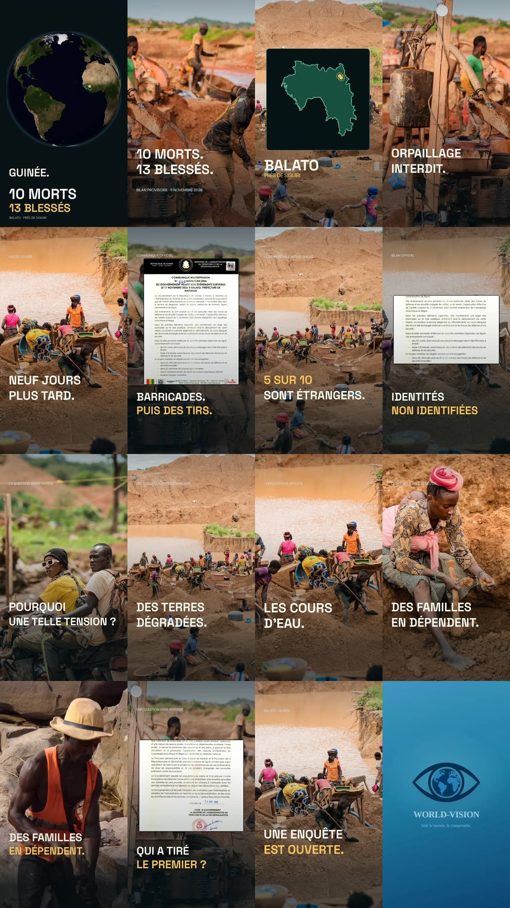

Les images ont
vraiment changé.
Nouveau montage de Siguiri : treize des seize séquences visuelles reconstruites avec des photos prises en Guinée et un véritable communiqué officiel. La prise Vivienne reste la même, avec le volume rééquilibré pour smartphone.

Version avec son rehaussé : mesure de loudness avant/après et vérification vidéo identique disponibles dans le rapport audio. Les images et le script sont inchangés.
Ce qui est conservé, ce qui change
Conservés à l'identique : le globe qui situe la Guinée dans les trois premières secondes, le vrai plan vidéo de l'homme au marteau, la signature de fin bleue, le script choisi et l'intégralité du flux audio Vivienne. Aucune nouvelle voix n'a été synthétisée.
Remplacés : les treize autres plans. Plus de longues cartes noires, plus de faux « reportages » faits d'une simple terre rouge sans rapport avec le texte. Photos guinéennes de 2024, re-cadrage éditorial précis, mouvements de caméra discrets et véritable communiqué gouvernemental pour les faits sur les affrontements.

Vérité des images et droits
Ce ne sont pas des photographies des affrontements de Balato de novembre 2026. Les nouveaux visuels montrent réellement l'orpaillage en Guinée, photographié le 21 juillet 2024. Ils apportent du contexte humain sans prétendre montrer les victimes ou les tirs. L'annonce des autorités est représentée par un extrait authentique de leur communiqué du 12 novembre 2026.
Photographies : LincolnGN / Wikimedia Commons, série Les Orpailleurs du Quotidien 01 à 05, licence CC BY-SA 4.0. Elles ont été recadrées, légèrement étalonnées et surimprimées de typographie pour cette relecture. Le partage sous les mêmes conditions peut s'appliquer aux adaptations : respecter les obligations de cette licence avant publication.
Voir les photographies originales et leurs auteurs · Communiqué officiel du gouvernement.
Il s'agit d'un montage de relecture artistique. La voix Vivienne reste la même prise, mais son volume a été corrigé ; avec le même statut de droits commerciaux non vérifiés. Le contrôle technique prouve que le son et le script n'ont pas changé ; ta validation de la qualité visuelle reste nécessaire.